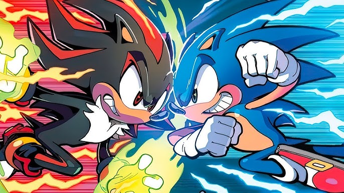
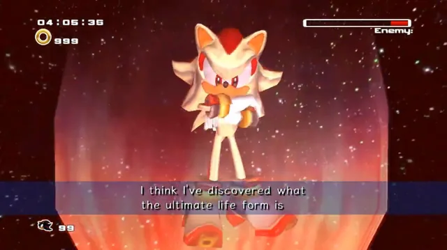
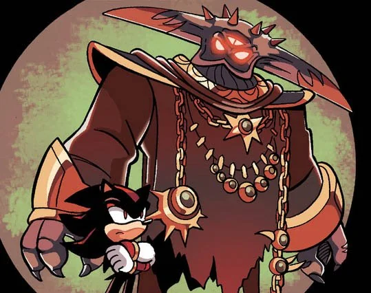
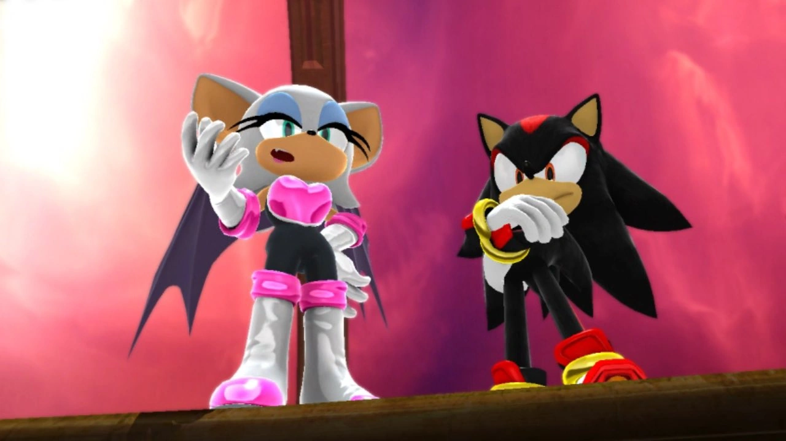

Sabe por que?

Forma de vida suprema
Desde seu surgimento, é ressaltado que o Shadow foi criado como uma forma de vida suprema.

O pai dele é f#da.
E por consequência ele é f#dinha.

Ele namora uma morcega gótica.
Isso é literalmente o sonho de todo homem.
"Isso é como tirar doce de uma criança, o que não me faz mal nenhum."
- Shadow, o ouriço.
Quer saber mais?
Confira os links para mais informações sobre Shadow.